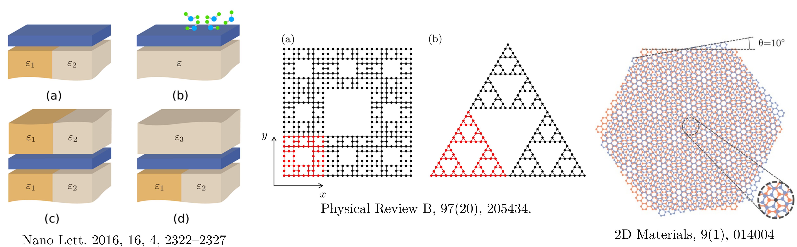
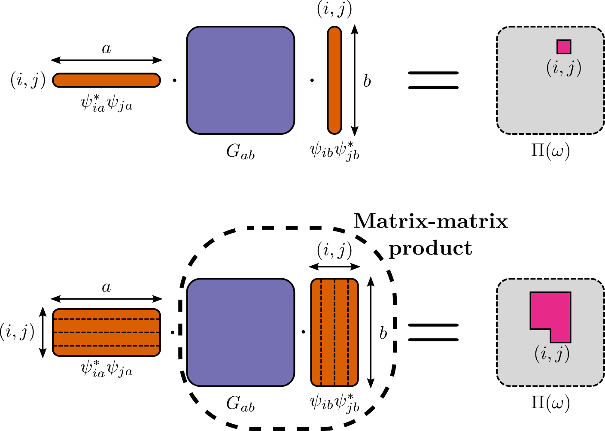

layout: true background-image: url(assets/img/ru_logo_a4_imm_eng_1.png) background-position: 85% 98% background-size: 25% --- class: center, middle # Making real-space Random Phase Approximation fast .big[ Tom Westerhout<br> 18 May 2022] --- # What is real-space RPA? - Also known as Lindhard function. - A model for computing screening properties, i.e. \\(\Pi(\omega)\\) and \\(\varepsilon(\omega)\\). .center[ ] The rest is trivial: \\(\varepsilon(\omega) = 1 - U \Pi(\omega)\\), \\(W(\omega) = \varepsilon(\omega)^{-1} U\\), etc. --- .center[ General techniques that are applicable to other methods as well. ] --- # Naive approach .center[ $$ \Pi\_{ij}(\omega) = 2 \cdot \sum\_{ab} \psi^\*\_{ia} \psi\_{ib} \psi^\*\_{jb} \psi\_{ja} \underbrace{\frac{f(E\_a) - f(E\_b)}{E\_a - E\_b + \hbar\omega + i\eta}}\_{G\_{ab}} $$ ] ```julia for i ∈ 1:N for j ∈ 1:N acc = 0 for a ∈ 1:N for b ∈ 1:N acc += conj(œà[i, a]) * œà[i, b] * conj(œà[j, b]) * œà[j, a] * G[a, b] end end Œ†[i, j] = 2 * acc end end ``` .center[ Complexity: \\(\mathcal{O}(N^4)\\) ] --- # Why bother with real space? - Many interesting systems with broken translational invariance.  --- # But if you had just used Fortran ü§î ... - or C/C++/Rust/Julia/your favorite language ‚Äî ‚ùå<br><br> - applicable to other programming languages ‚Äî ‚úÖ<br><br> - applicable to other numerical methods ‚Äî ‚úÖ --- # SIMD instructions - **S**ingle **I**nstruction **M**ultiple **D**ata --- # BLAS is fast, right? $$ \begin{aligned} \Pi\_{ij}(\omega) &= 2 \cdot \sum\_{ab} \psi^\*\_{ia} \psi\_{ib} \psi^\*\_{jb} \psi\_{ja} G\_{ab} = 2 \cdot \sum\_{ab} \underbrace{\psi^\*\_{ia} \psi\_{ja}}\_{v^\dagger\_a} G\_{ab} \underbrace{\psi\_{ib} \psi^\*\_{jb}}\_{v\_b} \\\\ &= 2 \cdot v^\dagger (G v) \,. \end{aligned} $$ .float-left50[ $$ \mathrm{time}(N) = \alpha + \beta \cdot N^4 \,. $$ - About 5.5 times reduction in \\( \beta \\). - All time is spent in `GEMV` (**GE**neral **M**atrix-**V**ector product). ] .float-right50[ ] --- # But matrix-vector produts are slow! .center[ ] --- # Memory bound vs. compute bound .center[ ] - Matrix-vector ➡ \\(\mathcal{O}(N^2)\\) memory & \\(\mathcal{O}(N^2)\\) compute ➡ memory bound. - Matrix-matrix ➡ \\(\mathcal{O}(N^2)\\) memory & \\(\mathcal{O}(N^3)\\) compute ➡ compute bound. --- # Batching to the rescue $$ \Pi\_{ij}(\omega) = 2 \cdot \sum\_{ab} \underbrace{\psi^\*\_{ia} \psi\_{ja}}\_{v^\dagger\_a} G\_{ab} \underbrace{\psi\_{ib} \psi^\*\_{jb}}\_{v\_b} = 2 \cdot v^\dagger (G v) \,. $$ - \\(\Pi_{ij}(\omega)\\) element ➡ \\(\mathcal{O}(N^2)\\) mem. & \\(\mathcal{O}(N^2)\\) compute ➡ memory bound üòû<br><br> - \\(\Pi(\omega)\\) matrix ➡ \\(\mathcal{O}(N^2)\\) mem. & \\(\mathcal{O}(N^4)\\) compute ➡ compute bound üòÉ<br><br> --- # Batching to the rescue .center[  ] --- # Batching to the rescue .float-left30[ $$ \mathrm{time}(N) = \alpha + \beta \cdot N^4 \,. $$ ] .float-right70[ ] - Another **44** times reduction in \\( \beta \\). - All time is spent in `GEMM` (**GE**neral **M**atrix-**M**atrix product). --- # GPUs are good at matrix-multiplication, aren't they? .float-left30[ $$ \mathrm{time}(N) = \alpha + \beta \cdot N^4 \,. $$ Yet another **24** times reduction in \\( \beta \\). ] .float-right70[ ] --- # Are we really doing the minimal number of operations? - exploiting sparsity of G - splitting real and complex parts --- # Contributions